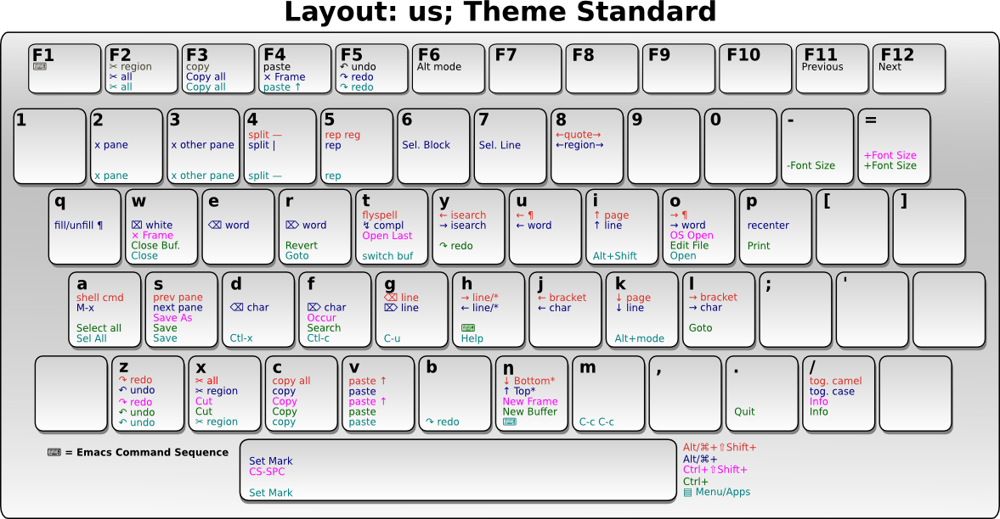

ergoemacs-mode
A minor-mode that aims to:
- Use/Create ergonomic keybindings in emacs that will reduce RSI
- Use the commonly bound keys familiar to most people today. Ctrl+C for copy, Ctrl+z for undo, etc.
Quick start guide
Setup
First you need to install Emacs. Then you have 2 ways to install ergoemacs-mode.
Using melpa
If you are using emacs 24 and melpa it would be very easy to install. type:
Alt+xpackage-install ergoemacs-mode
Manual setup
Start by cloning the main branch git repository from Github
cd ~/.emacs.d git clone -b master --single-branch https://github.com/ergoemacs/ergoemacs-mode.git
And add following to your ~/.emacs.d/init.el file:
(add-to-list 'load-path "~/.emacs.d/ergoemacs-mode") (require 'ergoemacs-mode)
Enabling ergoemacs-mode
To enable emacs, add the following to your ~/.emacs.d/init.el file:
(setq ergoemacs-theme nil) ;; Uses Standard Ergoemacs keyboard theme (setq ergoemacs-keyboard-layout "us") ;; Assumes QWERTY keyboard layout (ergoemacs-mode 1)
For other key themes and keyboard layouts the initilization code should be different. However, for QWERTY, the key bindings are:
